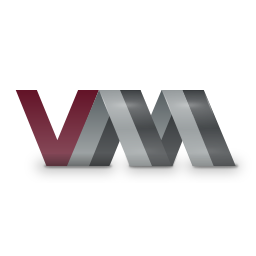

Virt-Manager Template
- Created a Virt-Manager template leveraging the native QEMU SDL or GTK interfaces/screens for faster VM setup.
- Fully compatible with NixOS configurations for virtual machine environments (just replace the binary path).
- Pre-configured VM settings and scripts to streamline deployment and minimize setup time.